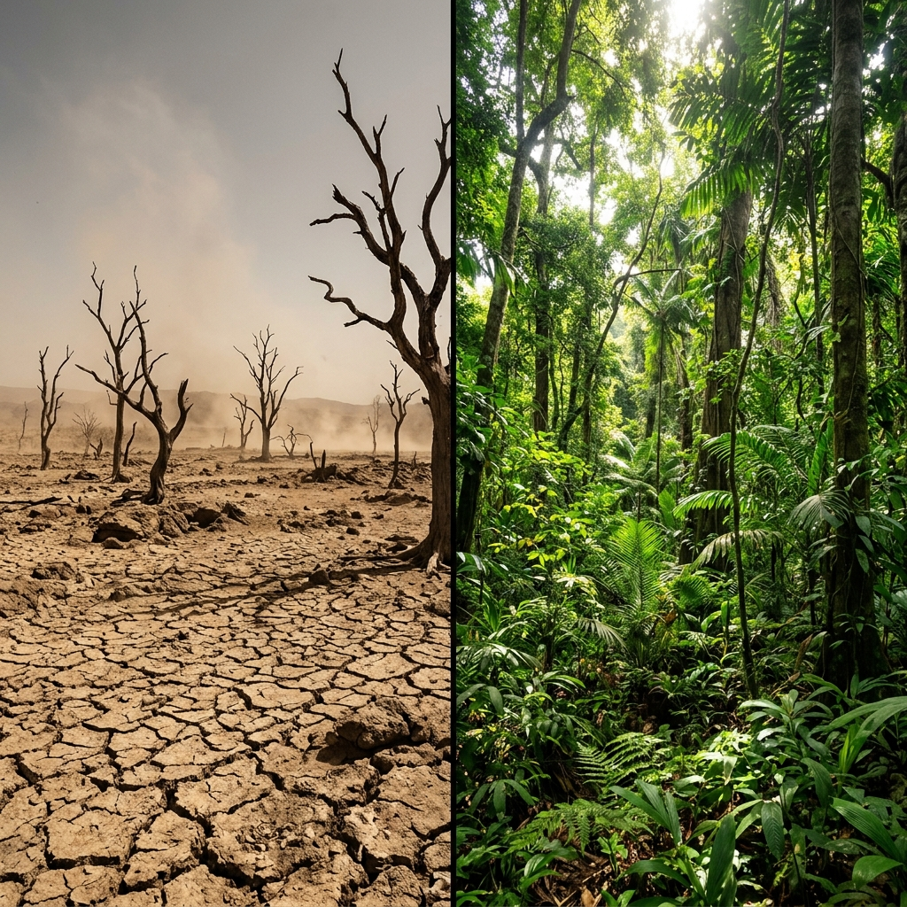
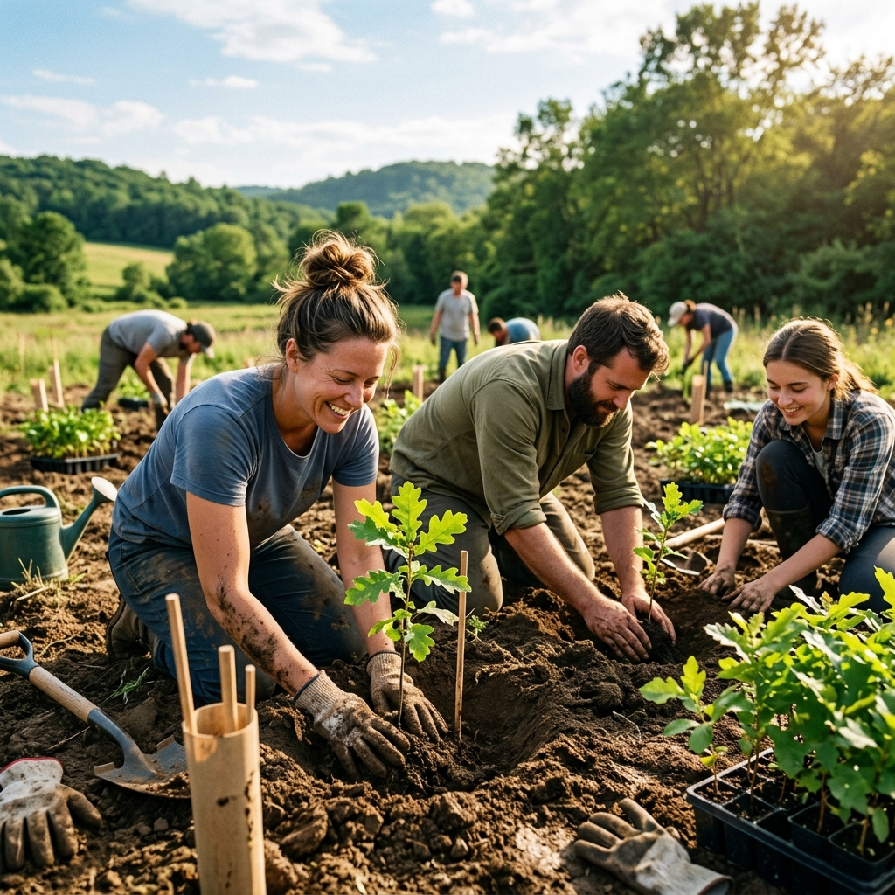
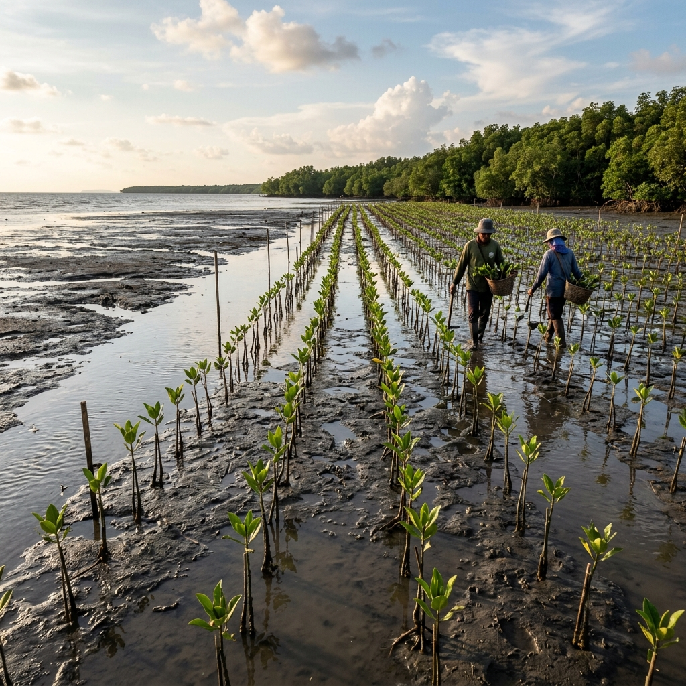
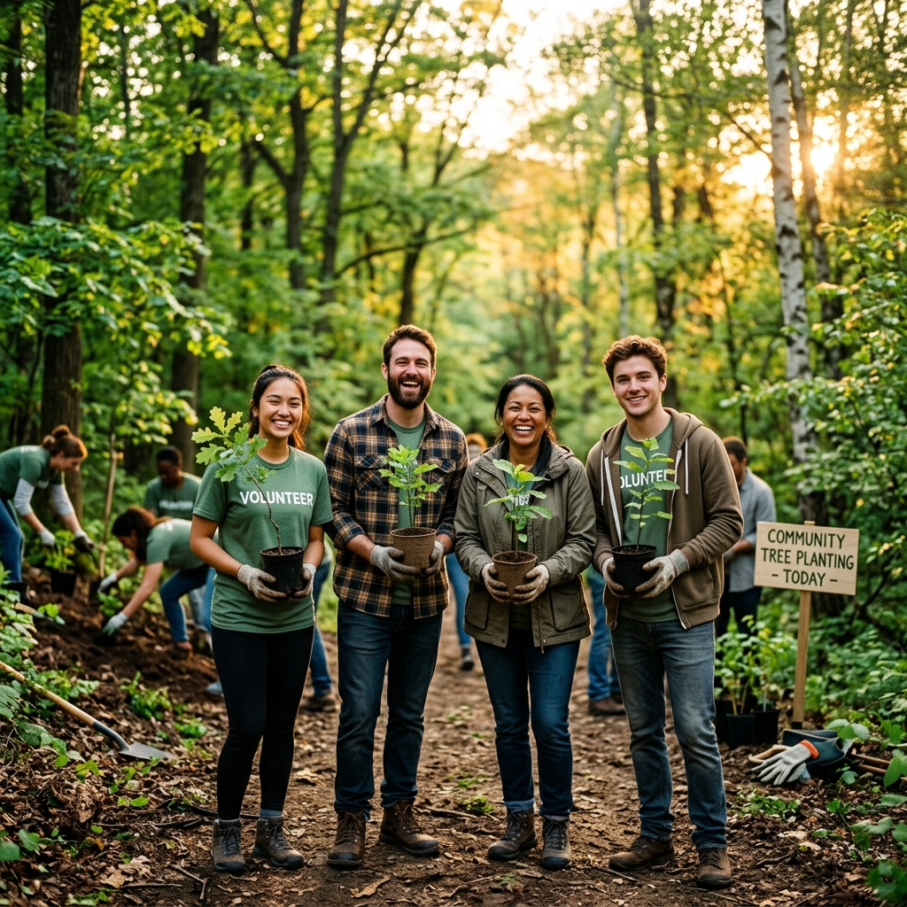

Adopsi pohonmu sekarang dan bantu pulihkan ekosistem darat.
Hanya Rp15.000.
Hanya tiga langkah sederhana untuk menjadi bagian dari perubahan nyata.
Donasi secepat pesan kopi. Cukup Rp15.000 melalui Saweria — bayar pakai QRIS atau e-wallet kapan saja, di mana saja.
Dana 100% disalurkan langsung ke komunitas peduli lingkungan terpercaya untuk pembelian bibit pohon berkualitas.
Pohon ditanam di lahan kritis dan titik koordinat GPS-nya dilaporkan secara terbuka di halaman Live Tracker ini.
Setiap rupiah yang kamu donasikan langsung berubah menjadi bibit pohon yang menghirup CO₂ dan menghidupkan kembali ekosistem kita.
Harga Adopsi Per Pohon
≈ Seharga es kopi susu favoritmu
Kamu akan diarahkan ke halaman Saweria kami yang aman
Bukti nyata setiap pohon yang ditanam dari donasi kalian. Setiap titik adalah harapan yang tumbuh.

Ditanam oleh Komunitas Hijau Sulsel

Ditanam oleh Komunitas XYZ

Ditanam oleh Komunitas EcoMuda
Ingin pohonmu ada di sini? Ikut berpatungan sekarang!
🌱 Adopsi Pohonku